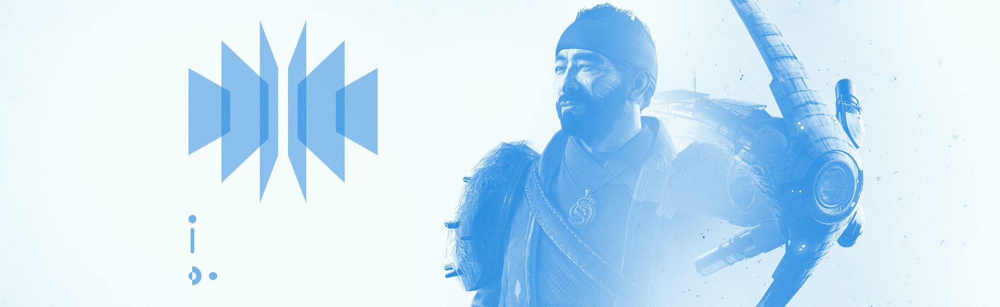

Drifter scowled at a notch on his glaive as he buffed the blade with a heavy cloth. A large attaché case rested heavily at his feet.
He and Joxer were back aboard the Derelict. The Titan held his head in his hands. His glowing armor suffused the room with a blood-red warmth.
“Cheer up, brother,” Drifter said. “That didn’t go too bad.”
“Three Guardians are dead,” Joxer replied, looking up to stare straight at the rogue Lightbearer.
“That’s right,” Drifter quipped, continuing to clean his weapon. “In the dirt. Never comin’ back. Their Ghosts got sloppy. You give Taken the chance and they’ll snuff out your Light. The fact that you’re alive means your Ghost knows what he’s doin’.”
J: “You said this was a test run.”
D: “Where do you think you are? The Crucible? Gambit Prime is for keeps, test or no.”
J: “You son of a—”
D: “Leave the name-calling to me, hotshot. Let’s wrap up this debrief and get you paid.”
J: “You could’ve helped them.”
Drifter stood, slamming the butt of his freshly polished glaive on the attaché case at his feet.
D: “You got yourself out,” he said, leaning on the weapon. “You didn’t need help.”
J: “You could’ve stopped those Taken. You could’ve saved them all.”
D: “I paid you to try on that armor. How’s it treating you?”
Joxer was silent. “It worked exactly like you said it would,” he finally responded. “I invaded the other side. The armor locked the Bank down, and I took their Motes right out of it, like they were mine.” He looked down at the deck. “We wiped them out.”
“Yes. Yes, you did,” Drifter said, nodding along fiercely with each detail.
J: “You’re giving everyone a set of these?”
D: “If they can build it themselves. I’ll gladly provide the engram prints.” He half-smiled. “Your fireteam—may they rest in peace—they help you out?”
Joxer took his helmet off, rubbed his eyes. “We didn’t use names, just like you told us. The… the Warlock watched our Bank.”
“Like a one-man private security company,” Drifter nodded.
J: “He always seemed to know where the other Invader was.”
D: “A Sentry worth their salt always does.”
J: “And the Hunter. She was a beast. Tore those Cabal up like they were made of paper.”
“Your team’s Reaper,” Drifter clarified. “She’s like you, a born killer. But specializing in the enemies of humanity. Your Collector’s best friend.”
J: “Yeah, the Collector, one squirrely Titan. Hid a lot, grabbed a bunch of Motes.”
Drifter snickered. “You thought he was useless, didn’t ya?”
Joxer sighed. “‘Til he dropped the meanest Taken I’ve ever seen on the enemy side.”
“Brother, if you manage to summon a giant blocker?” Drifter shook his head, grinning. “That thing’s gotta eat.”
J: “We had them. We gutted the opposing team. It’s just…” The Titan stopped speaking. He didn’t lift his head, still staring at the deck.
“The Primeval,” Drifter said, with a touch of… pride?
J: “That Primeval took us apart.”
Drifter shrugged. “You found one that matched your strength. Lesson learned. Make sure your Ghost stays on his toes.”
“They’re all dead,” Joxer said again.
“Yeah, in a town full of immortals,” Drifter said. “Who’da thought? Their cut goes to you. And a little extra to keep, you know, the details outta sight from the Vanguard.”
The rogue Lightbearer kicked the attaché case across the deck. Joxer picked it up without opening it.
“More where that came from, if you want the work,” Drifter said, leaning on his glaive again.
J: “You’re on your own.” Joxer stood and walked past the Drifter. He left the chamber, massive case in tow.
“You can keep the armor,” Drifter called after him, not bothering to turn around.
As the Titan’s footsteps echoed down the hall towards the Derelict’s hangar, a Ghost emerged from a dark alcove.
“How much data did you pick up?” Drifter asked.
The Ghost’s eye glowed a dark red as it projected patterns across the metal deck: scrolling streams of statistics and figures for each candidate in their roles. Three Ghost-feeds hung in the air, playing on loop. Each one restarted as the same massive Taken came into focus.
Drifter took it all in, his eyes reflecting the blood-red of his Ghost’s Light. His smile was all teeth.